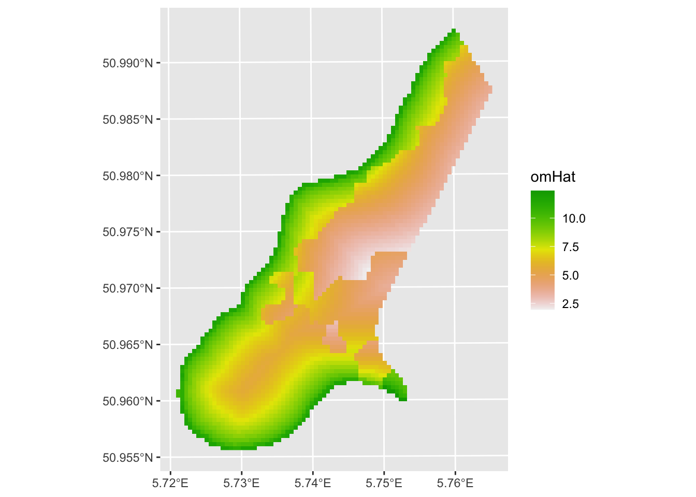
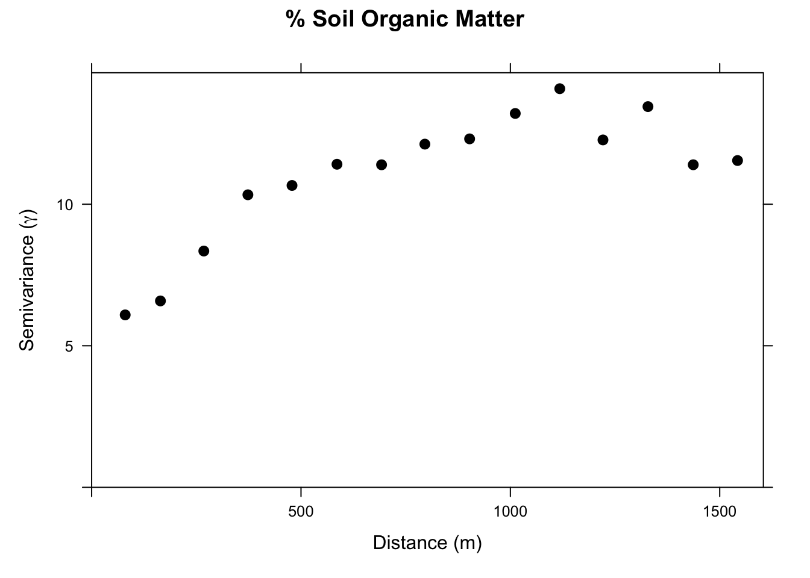
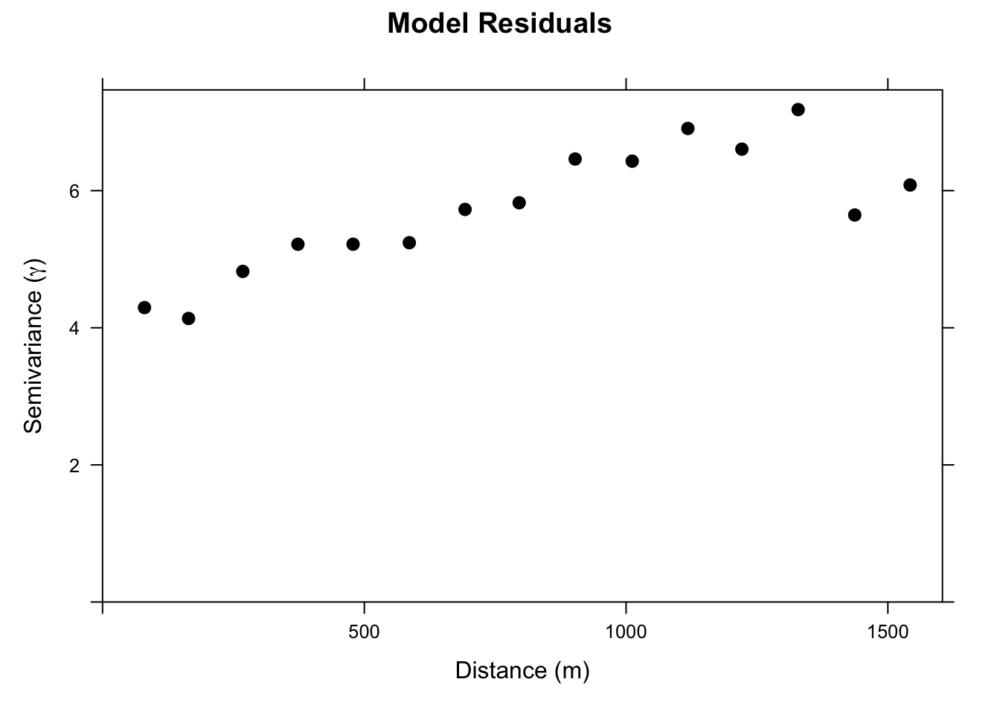
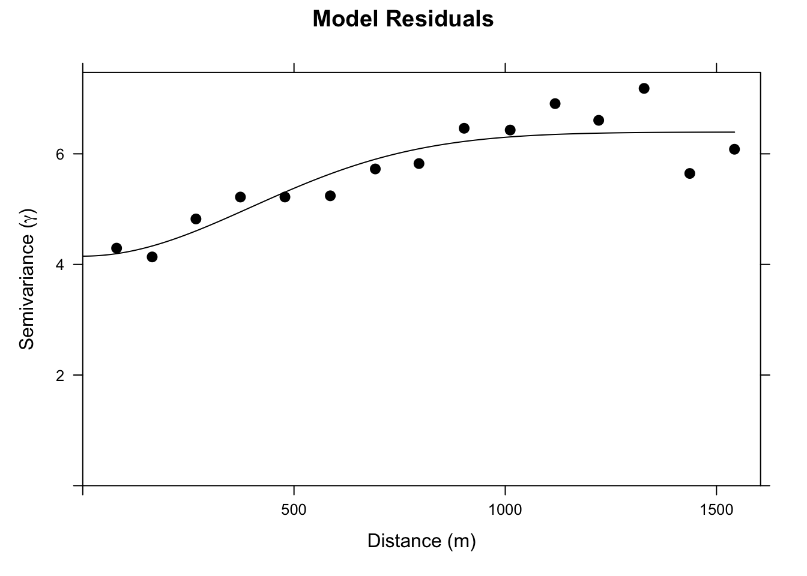
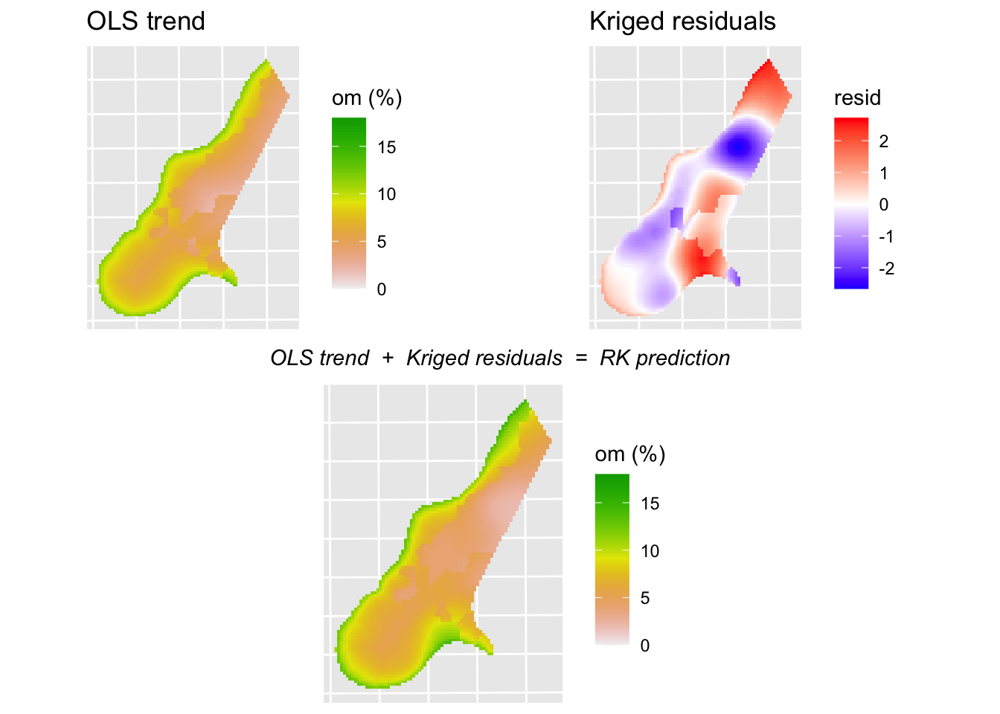
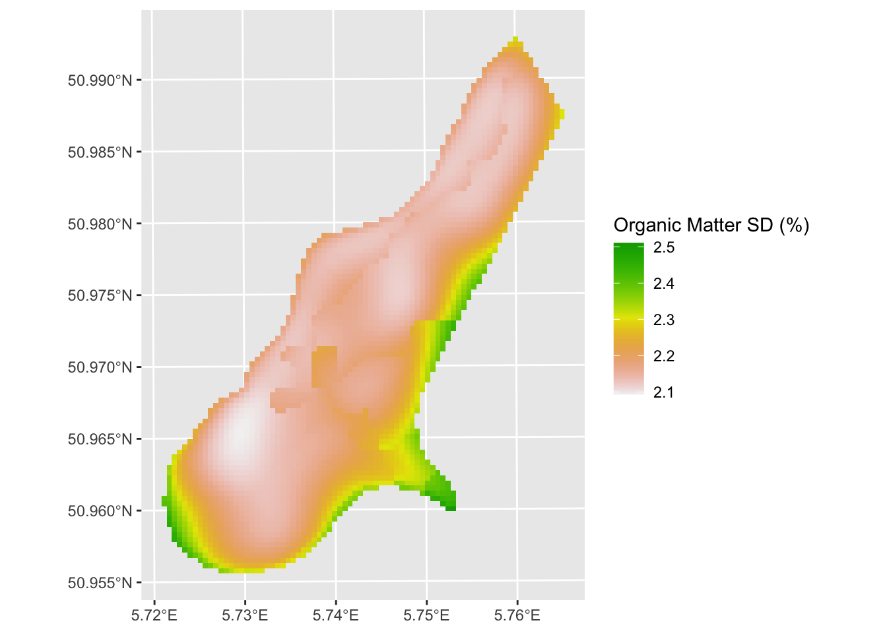

Code
library(tidyverse)
library(sf)
library(terra)
library(tidyterra)
library(gstat)
library(cowplot)Plain kriging uses the spatial structure of the response variable itself to make predictions. That works well, but it ignores something we often have access to: variables that are cheap to measure everywhere and that correlate with the thing we care about. Distance to a river, elevation, soil type, and land cover can all be derived from GIS or remote sensing data across an entire study area, even when your expensive response variable is only measured at a handful of sample points. Regression kriging (RK) combines a regression model using those covariates with kriging of the regression residuals, giving you better predictions than either approach alone.
Meng et al. (2013) provide a (mostly) readable description of regression kriging and compare it to the kind of interpolation approaches we’ve looked at already. Give it a heavy skim.
The gstat(Pebesma and Graeler 2026) package is your friend. But we will need some of our recent collaborators as well including terra(Hijmans 2026) and tidyterra(Hernangómez 2023), plus sf(Pebesma 2026) and tidyverse(Wickham 2023) for the usual data wrangling. We’ll use cowplot(Wilke 2025) to arrange plots at the end.
The basic idea is a two-step process. First, fit an OLS regression of your response variable on whatever covariates you have available at both your sample locations and your prediction grid. Second, take the residuals from that regression, fit a variogram to them, and krige those residuals across the prediction grid. The final RK prediction at any location is the OLS fitted value plus the kriged residual:
\[\hat{Z}_{RK}(s_0) = \hat{Z}_{OLS}(s_0) + \hat{\varepsilon}(s_0)\]
The OLS surface captures the broad, covariate-driven trend: organic matter is higher near the river, lower on certain soil types, and so on. In geostatistics, this large-scale spatially varying mean is called the trend, not a trend over time but a systematic variation across space driven by covariates. The kriged residual surface captures the local spatial deviations from that trend, the pockets where organic matter is a bit higher or lower than the covariates alone would predict, based on what we observe at nearby sample points. Adding them together gives a prediction that is informed by both the large-scale drivers and the local spatial structure.
The residuals from the OLS model represent the spatial variation that the covariates couldn’t explain. If those residuals are spatially autocorrelated (and they often are), kriging can extract useful information from their spatial structure. In a standard OLS setting, autocorrelated residuals are a problem because they violate the independence assumption. In RK, they’re an opportunity.
RK is used more and more commonly now that cheap and powerful covariates can be derived from remote sensing and GIS data. Elevation grids, land cover maps, distance-to-feature layers: if it predicts your response and you have it everywhere, it can go in the model.
If you want a refresher on how to fit an OLS model and then apply it to new data with predict, see the Predicting New Data aside. That pattern is the foundation of the RK workflow.
Let’s look at a real-world example of RK using, you guessed it, the Meuse River data. I’m pretty sick of these data but they are familiar to us. We’ve used meuse.all quite a bit and we’ve used meuse.grid as an empty grid to interpolate into. But meuse.grid has other variables in it that we haven’t used yet, and some of those overlap with meuse.all. That overlap is what makes RK possible here.
'data.frame': 164 obs. of 17 variables:
$ sample : num 1 2 3 4 5 6 7 8 9 10 ...
$ x : num 181072 181025 181165 181298 181307 ...
$ y : num 333611 333558 333537 333484 333330 ...
$ cadmium : num 11.7 8.6 6.5 2.6 2.8 3 3.2 2.8 2.4 1.6 ...
$ copper : num 85 81 68 81 48 61 31 29 37 24 ...
$ lead : num 299 277 199 116 117 137 132 150 133 80 ...
$ zinc : num 1022 1141 640 257 269 ...
$ elev : num 7.91 6.98 7.8 7.66 7.48 ...
$ dist.m : num 50 30 150 270 380 470 240 120 240 420 ...
$ om : num 13.6 14 13 8 8.7 7.8 9.2 9.5 10.6 6.3 ...
$ ffreq : num 1 1 1 1 1 1 1 1 1 1 ...
$ soil : num 1 1 1 2 2 2 2 1 1 2 ...
$ lime : num 1 1 1 0 0 0 0 0 0 0 ...
$ landuse : Factor w/ 16 levels "Aa","Ab","Ag",..: 4 4 4 11 4 11 4 2 2 16 ...
$ in.pit : logi FALSE FALSE FALSE FALSE FALSE FALSE ...
$ in.meuse155: logi TRUE TRUE TRUE TRUE TRUE TRUE ...
$ in.BMcD : logi FALSE FALSE FALSE FALSE FALSE FALSE ...We know all too well by now that meuse.all is a data.frame with 164 point measurements of 17 variables.
'data.frame': 3103 obs. of 7 variables:
$ x : num 181180 181140 181180 181220 181100 ...
$ y : num 333740 333700 333700 333700 333660 ...
$ part.a: num 1 1 1 1 1 1 1 1 1 1 ...
$ part.b: num 0 0 0 0 0 0 0 0 0 0 ...
$ dist : num 0 0 0.0122 0.0435 0 ...
$ soil : Factor w/ 3 levels "1","2","3": 1 1 1 1 1 1 1 1 1 1 ...
$ ffreq : Factor w/ 3 levels "1","2","3": 1 1 1 1 1 1 1 1 1 1 ...And meuse.grid is a data.frame with 3103 points on a grid and 7 variables.
Three variables are shared between meuse.all and meuse.grid: distance to the river (normalized 0 to 1), soil type (three classes), and flooding frequency class (also three classes). Because we have these at every grid cell, we can build a regression model using them as predictors and then apply that model across the whole study area. See ?meuse.all for details on the variables.
We’ll skip cadmium, zinc, and lead this time and model om, percent organic matter in the soil, as a function of dist and soil. We’ll first do this naively with OLS alone, and then add the kriging step to get RK.
sf and clean it upFirst we will make both data sets into sf objects.
Simple feature collection with 164 features and 15 fields
Geometry type: POINT
Dimension: XY
Bounding box: xmin: 178605 ymin: 329714 xmax: 181390 ymax: 333611
Projected CRS: Amersfoort / RD New
First 10 features:
sample cadmium copper lead zinc elev dist.m om ffreq soil lime landuse
1 1 11.7 85 299 1022 7.909 50 13.6 1 1 1 Ah
2 2 8.6 81 277 1141 6.983 30 14.0 1 1 1 Ah
3 3 6.5 68 199 640 7.800 150 13.0 1 1 1 Ah
4 4 2.6 81 116 257 7.655 270 8.0 1 2 0 Ga
5 5 2.8 48 117 269 7.480 380 8.7 1 2 0 Ah
6 6 3.0 61 137 281 7.791 470 7.8 1 2 0 Ga
7 7 3.2 31 132 346 8.217 240 9.2 1 2 0 Ah
8 8 2.8 29 150 406 8.490 120 9.5 1 1 0 Ab
9 9 2.4 37 133 347 8.668 240 10.6 1 1 0 Ab
10 10 1.6 24 80 183 9.049 420 6.3 1 2 0 W
in.pit in.meuse155 in.BMcD geometry
1 FALSE TRUE FALSE POINT (181072 333611)
2 FALSE TRUE FALSE POINT (181025 333558)
3 FALSE TRUE FALSE POINT (181165 333537)
4 FALSE TRUE FALSE POINT (181298 333484)
5 FALSE TRUE FALSE POINT (181307 333330)
6 FALSE TRUE FALSE POINT (181390 333260)
7 FALSE TRUE FALSE POINT (181165 333370)
8 FALSE TRUE FALSE POINT (181027 333363)
9 FALSE TRUE FALSE POINT (181060 333231)
10 FALSE TRUE FALSE POINT (181232 333168)Simple feature collection with 3103 features and 5 fields
Geometry type: POINT
Dimension: XY
Bounding box: xmin: 178460 ymin: 329620 xmax: 181540 ymax: 333740
Projected CRS: Amersfoort / RD New
First 10 features:
part.a part.b dist soil ffreq geometry
1 1 0 0.00000000 1 1 POINT (181180 333740)
2 1 0 0.00000000 1 1 POINT (181140 333700)
3 1 0 0.01222430 1 1 POINT (181180 333700)
4 1 0 0.04346780 1 1 POINT (181220 333700)
5 1 0 0.00000000 1 1 POINT (181100 333660)
6 1 0 0.01222430 1 1 POINT (181140 333660)
7 1 0 0.03733950 1 1 POINT (181180 333660)
8 1 0 0.05936620 1 1 POINT (181220 333660)
9 1 0 0.00135803 1 1 POINT (181060 333620)
10 1 0 0.01222430 1 1 POINT (181100 333620)One thing to note here is that the dist.m column in meusePoints_sf is the distance to the river in meters while meuseGrid_sf has distance in relative units (scaled 0 to 1). To make life easier we will add the relative distances to the point data using the dist values from meuseGrid_sf.
# get the relative distance from meuseGrid_sf and add it to meusePoints_sf
meuseGrid_dist_sf <- meuseGrid_sf %>% select(dist)
# join the two objects by the nearest point
meusePoints_sf <- st_join(meusePoints_sf, meuseGrid_dist_sf, join = st_nearest_feature)
# note that we now have relative dist for each point now in the column `dist`
meusePoints_sfSimple feature collection with 164 features and 16 fields
Geometry type: POINT
Dimension: XY
Bounding box: xmin: 178605 ymin: 329714 xmax: 181390 ymax: 333611
Projected CRS: Amersfoort / RD New
First 10 features:
sample cadmium copper lead zinc elev dist.m om ffreq soil lime landuse
1 1 11.7 85 299 1022 7.909 50 13.6 1 1 1 Ah
2 2 8.6 81 277 1141 6.983 30 14.0 1 1 1 Ah
3 3 6.5 68 199 640 7.800 150 13.0 1 1 1 Ah
4 4 2.6 81 116 257 7.655 270 8.0 1 2 0 Ga
5 5 2.8 48 117 269 7.480 380 8.7 1 2 0 Ah
6 6 3.0 61 137 281 7.791 470 7.8 1 2 0 Ga
7 7 3.2 31 132 346 8.217 240 9.2 1 2 0 Ah
8 8 2.8 29 150 406 8.490 120 9.5 1 1 0 Ab
9 9 2.4 37 133 347 8.668 240 10.6 1 1 0 Ab
10 10 1.6 24 80 183 9.049 420 6.3 1 2 0 W
in.pit in.meuse155 in.BMcD dist geometry
1 FALSE TRUE FALSE 0.00135803 POINT (181072 333611)
2 FALSE TRUE FALSE 0.01222430 POINT (181025 333558)
3 FALSE TRUE FALSE 0.10302900 POINT (181165 333537)
4 FALSE TRUE FALSE 0.19009400 POINT (181298 333484)
5 FALSE TRUE FALSE 0.27709000 POINT (181307 333330)
6 FALSE TRUE FALSE 0.36406700 POINT (181390 333260)
7 FALSE TRUE FALSE 0.19009400 POINT (181165 333370)
8 FALSE TRUE FALSE 0.09215160 POINT (181027 333363)
9 FALSE TRUE FALSE 0.18461400 POINT (181060 333231)
10 FALSE TRUE FALSE 0.30970200 POINT (181232 333168)We will go a step further and use the square root of the distance to the river as a predictor. This gives us a little more leverage on very short distances by stretching out that end of the scale.
The column om in meusePoints_sf has two missing values. I’m going to drop those rows to keep things clean. Note the new row count after you run this.
And we need soil type as a factor since it’s categorical.
We’ll start with a simple OLS model of organic matter (\(y\)) as a function of the square root of distance to the river (\(x_1\)) and soil type (\(x_2\)): \(y=\beta_0 + \beta_1x_1+\beta_2x_2\), with parameters estimated by OLS.
Call:
lm(formula = om ~ sqrt_dist + soil, data = meusePoints_sf)
Residuals:
Min 1Q Median 3Q Max
-6.8478 -1.4629 -0.1575 1.4344 7.3786
Coefficients:
Estimate Std. Error t value Pr(>|t|)
(Intercept) 11.6894 0.4418 26.460 < 2e-16 ***
sqrt_dist -8.9179 1.0902 -8.180 8.79e-14 ***
soil2 -1.7178 0.5047 -3.403 0.000843 ***
soil3 0.7120 0.8628 0.825 0.410449
---
Signif. codes: 0 '***' 0.001 '**' 0.01 '*' 0.05 '.' 0.1 ' ' 1
Residual standard error: 2.473 on 158 degrees of freedom
Multiple R-squared: 0.4926, Adjusted R-squared: 0.4829
F-statistic: 51.12 on 3 and 158 DF, p-value: < 2.2e-16Analysis of Variance Table
Response: om
Df Sum Sq Mean Sq F value Pr(>F)
sqrt_dist 1 833.08 833.08 136.197 < 2.2e-16 ***
soil 2 105.07 52.54 8.589 0.0002877 ***
Residuals 158 966.45 6.12
---
Signif. codes: 0 '***' 0.001 '**' 0.01 '*' 0.05 '.' 0.1 ' ' 1Both distance and soil type are useful predictors of organic matter. Now, after you learn about the pitfalls of using OLS with spatial data you’ll be appalled that I’m running this model without checking for autocorrelation in the residuals. But suppress your horror for now, because all we want to do here is show what a purely regression-based prediction surface looks like before we improve on it. Note the below we do the prediction and then make a raster of the output using the function sf_2_rast from the prior weeks.
meuseGrid_sf$omHat <- predict(om_lm, newdata=meuseGrid_sf)
sf_2_rast <- function(sfObject, variable2get = 1){
tmp <- sfObject[,variable2get] %>% st_drop_geometry()
dfObject <- data.frame(st_coordinates(sfObject), z=tmp)
rastObject <- rast(dfObject, crs=crs(sfObject))
return(rastObject)
}
meuseGrid_rast <- sf_2_rast(meuseGrid_sf, variable2get = "omHat")
ggplot() + geom_spatraster(data = meuseGrid_rast,
mapping = aes(fill=omHat)) +
scale_fill_terrain_c() +
labs(fill = "omHat")
The prediction is reasonable, but the residuals are spatially autocorrelated: Moran’s I on a four-neighbor object is 0.23, significantly greater than zero. That matters, and we’ll come back to it in the GLS module.
The OLS model used distance and soil type but ignored everything we know about the spatial structure of organic matter. We threw out the variogram. And we know from the Moran’s I above that the residuals are not spatially independent, meaning there is structure left over that the covariates didn’t capture. That leftover structure is exactly what kriging is designed to exploit.
Let’s look at the variogram of om before conditioning on anything

Now we set up a gstat object that includes the regression formula. When we call variogram on this object, we get the variogram of the OLS residuals, not of om itself. The residuals here are just the familiar \(e_i = om_i - \hat{om}_i\) at each sample point: how much higher or lower is the observed organic matter than what distance and soil type alone would predict? We’re asking whether those leftover deviations have spatial structure, or whether they’re just noise. Compare the two variogram plots and you’ll notice the residual variogram has less total variance, which is the variance the covariates explained away. What remains still has spatial structure, which means kriging has something to work with.

The residual variogram isn’t dramatic, but the semivariance rises from a nugget of around four to a sill of around six. There is spatial structure in the residuals that we can use.
We fit a theoretical model to it. I’ll use a Gaussian model here, though an exponential would also be defensible.
omGau_variogramModel <- vgm(psill = 2, model = "Gau", range = 500, nugget = 4)
omGau_fittedVariogram <- fit.variogram(object = omGstat_obsVariogram,
model = omGau_variogramModel)
plot(omGstat_obsVariogram, omGau_fittedVariogram, pch=20, cex=1.5, col="black",
ylab=expression("Semivariance ("*gamma*")"),
xlab="Distance (m)", main = "Model Residuals")
Now we update the gstat object with the fitted variogram model and predict across the grid. Under the hood, predict is doing three things at every grid cell. First, it evaluates the OLS model by plugging sqrt_dist and soil into \(\hat{\beta}_0 + \hat{\beta}_1 x_1 + \hat{\beta}_2 x_2\) to get the covariate-driven trend at that location. Second, it kriging the residuals: it looks at the OLS residuals at the nearby sample points (\(e_i = om_i - \hat{om}_i\)) and uses the fitted variogram to estimate what the residual would be at the prediction location. Third, it adds the two together. The first part handles the large-scale pattern that distance and soil type explain. The second part handles the local spatial deviations that the covariates missed.
[using universal kriging]Simple feature collection with 3103 features and 2 fields
Geometry type: POINT
Dimension: XY
Bounding box: xmin: 178460 ymin: 329620 xmax: 181540 ymax: 333740
Projected CRS: Amersfoort / RD New
First 10 features:
omModel.pred omModel.var geometry
1 14.33925 5.370484 POINT (181180 333740)
2 14.38783 5.207101 POINT (181140 333700)
3 13.21201 5.157301 POINT (181180 333700)
4 12.16400 5.172975 POINT (181220 333700)
5 14.40785 5.072086 POINT (181100 333660)
6 13.24575 5.008217 POINT (181140 333660)
7 12.37959 5.012552 POINT (181180 333660)
8 11.85536 5.056317 POINT (181220 333660)
9 13.99687 4.937392 POINT (181060 333620)
10 13.24906 4.889664 POINT (181100 333620)To make this concrete, let’s look at all three surfaces: the OLS trend, the kriged residuals, and the final RK prediction that combines them. We have omHat from the OLS step already. We can recover the kriged residual surface by subtracting it from the RK prediction.
omHat_rast <- sf_2_rast(omHat_sf, variable2get = "omModel.pred")
# kriged residual surface = RK prediction minus OLS trend
omHat_sf$krigedResid <- omHat_sf$omModel.pred - meuseGrid_sf$omHat
omResid_rast <- sf_2_rast(omHat_sf, variable2get = "krigedResid")
p_ols <- ggplot() +
geom_spatraster(data = meuseGrid_rast, mapping = aes(fill=omHat)) +
scale_fill_terrain_c(limits=c(0,18)) +
labs(title="OLS trend", fill="om (%)") +
theme(axis.text=element_blank(), axis.ticks=element_blank())
p_resid <- ggplot() +
geom_spatraster(data = omResid_rast, mapping = aes(fill=krigedResid)) +
scale_fill_gradient2(low="blue", mid="white", high="red",
midpoint=0, na.value="transparent") +
labs(title="Kriged residuals", fill="resid") +
theme(axis.text=element_blank(), axis.ticks=element_blank())
p_rk <- ggplot() +
geom_spatraster(data = omHat_rast, mapping = aes(fill=omModel.pred)) +
scale_fill_terrain_c(limits=c(0,18)) +
labs(fill="om (%)") +
theme(axis.text=element_blank(), axis.ticks=element_blank())
eq <- ggdraw() + draw_label("OLS trend + Kriged residuals = RK prediction",
fontface="italic", size=11)
top_row <- plot_grid(p_ols, p_resid, ncol=2)
plot_grid(top_row, eq, p_rk, nrow=3, rel_heights=c(1, 0.1, 1))
The OLS surface is smooth: it varies only with distance and soil type. The kriged residual surface shows local corrections, positive where nearby samples were higher than the OLS predicted and negative where they were lower. The RK surface is the sum, which has the broad shape of the OLS prediction but with local detail added by the kriged residuals.
And the variance surface around the RK predictions:

Compare the RK prediction surface to the OLS surface above. The overall patterns driven by distance and soil type are still there, because those came from the regression, but the spatial detail is richer because the kriged residuals filled in structure the covariates missed. Whether the added complexity translates to better predictive skill is a question for cross-validation.
Use gstat.cv to perform cross-validation on both the OLS-only model (omGstat) and the full RK model (omGstat_w_variogram). Compute RMSE and R\(^2\) for each. Did RK improve the predictions over plain OLS? How much, and where do you think the improvement (or lack of it) came from?